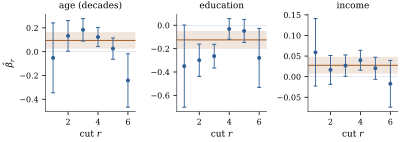

36.3 Proportional odds and its checks
Setting
Let
Then:
(a) (latent variable) Eq. 36.3.1 holds exactly when there is a latent response
(b) (collapsing) let
(c) (coherence) the ordering constraint Eq. 36.2.3 reduces to
(d) (interpretation) for any two regressor vectors and every
a single odds ratio that does not depend on
Proof.
(a) If such a latent variable exists, then
(b) The events are nested:
(c) Substitute
(d) From Eq. 36.3.1,
Idea. Part (b) is why the model is worth having: the slope means the same thing however finely the scale was cut, so studies using three categories and seven are comparable. It is also the model’s exposed flank, since every dichotomization must give that slope.
Warning (What proportional odds does not
say). Eq. 36.3.2 is
about cumulative odds. It does not say that a
unit of
36.3.1. Checking the assumption
The restriction is
Let
(a) the score statistic
(b) the likelihood ratio and Wald statistics for the same hypothesis have the same limit and are asymptotically equivalent to
(c) the
Proof.
(a) By definition of a maximum, the components of
(b) The asymptotic equivalence of the three statistics is Proposition 34.5.3, and it carries over under the same imported conditions; the hypothesis is a linear restriction on a parameter interior to the parameter space.
(c) Dichotomizing at cut
Brant (1990) turns (c) into a test by estimating the
joint covariance of the
Warning (The test is not the
question). With
36.3.2. Self-placement, checked
The common odds ratio of Theorem 36.3.1(d)
is worth having only if it is there. For Example (A seven-point scale),
let all three slopes vary across the six cuts. The score
statistic of Proposition 36.3.2
is 67.667 on 15 degrees of freedom,
| regressor | score statistic | likelihood ratio | |
|---|---|---|---|
| age | 17.542 | 18.367 | |
| education | 41.258 | 40.190 | |
| income | 20.056 | 20.155 |
Education is the main offender. Figure
36.3.1 shows why: its slope is near

The cells on this page continue those of Section 36.2; this first one repeats the data and the fitting routine so that the page runs on its own.
import numpy as np
import statsmodels.api as sm
from scipy import stats
NAMES = ["age (decades)", "education", "income"]
anes = sm.datasets.anes96.load_pandas().data
y = anes["selfLR"].astype(int).to_numpy() # 1 = extremely liberal ... 7 = extremely conservative
X = np.column_stack([anes["age"] / 10.0, anes["educ"], anes["income"]])
n, p = X.shape
c = 7
Y = np.zeros((n, c))
Y[np.arange(n), y - 1] = 1.0
def cum_gamma(psi, X, c, free):
n, p = X.shape
q, nf, fl = len(psi), len(free), list(free)
theta, beta = psi[:c - 1], psi[c - 1:c - 1 + p]
delta = psi[c - 1 + p:].reshape(c - 2, nf)
G = np.empty((n, c - 1))
dG = np.zeros((n, c - 1, q))
for r in range(c - 1):
beta_r = beta.copy()
if r >= 1 and nf:
beta_r[fl] = beta_r[fl] + delta[r - 1]
g = 1.0 / (1.0 + np.exp(-(theta[r] - X @ beta_r)))
lam = (g * (1.0 - g))[:, None] # the logistic density at the cut
G[:, r] = g
dG[:, r, r] = lam[:, 0]
dG[:, r, c - 1:c - 1 + p] = -lam * X
if r >= 1 and nf:
off = c - 1 + p + (r - 1) * nf
dG[:, r, off:off + nf] = -lam * X[:, fl]
return G, dG
def cum_probs(psi, X, c, free):
G, dG = cum_gamma(psi, X, c, free)
P = np.diff(np.column_stack([np.zeros(len(X)), G, np.ones(len(X))]), axis=1)
D = np.concatenate([dG[:, :1, :], np.diff(dG, axis=1)], axis=1)
return P, D
def cum_score(psi, X, Y, c, free):
P, D = cum_probs(psi, X, c, free)
Pm = P[:, :c - 1]
Sigma = np.einsum("ir,rs->irs", Pm, np.eye(c - 1)) - np.einsum("ir,is->irs", Pm, Pm)
A = np.linalg.solve(Sigma, D) # Sigma_i^{-1} D_i, one observation at a time
U = np.einsum("irk,ir->k", A, Y[:, :c - 1] - Pm)
J = np.einsum("irk,irl->kl", D, A)
return U, J
def cum_loglik(psi, X, Y, c, free):
P, _ = cum_probs(psi, X, c, free)
return float(np.sum(Y * np.log(np.clip(P, 1e-300, None))))
def cum_fit(X, Y, c, free=(), tol=1e-10, maxit=100):
n, p = X.shape
psi = np.zeros((c - 1) + p + (c - 2) * len(free))
psi[:c - 1] = np.linspace(-1.5, 1.5, c - 1) # start from ordered cutpoints, no slopes
for it in range(1, maxit + 1):
U, J = cum_score(psi, X, Y, c, free)
step = np.linalg.solve(J, U)
psi = psi + step
if np.max(np.abs(step)) < tol:
break
return psi, J, it
psi, J, iters = cum_fit(X, Y, c)
theta, beta = psi[:c - 1], psi[c - 1:]
se = np.sqrt(np.diag(np.linalg.inv(J)))
ll_po = cum_loglik(psi, X, Y, c, ())
print(f"log-likelihood {ll_po:.4f} after {iters} Fisher scoring steps")# the same slopes estimated one cut at a time: c - 1 separate binary logistic fits
Xc = sm.add_constant(X)
cut_beta = np.empty((c - 1, p))
cut_se = np.empty((c - 1, p))
for r in range(1, c):
fit_r = sm.Logit((y <= r).astype(float), Xc).fit(disp=0)
cut_beta[r - 1] = -np.asarray(fit_r.params)[1:] # logit P(Y <= r) = theta_r - x^T beta_r
cut_se[r - 1] = np.asarray(fit_r.bse)[1:]
for r in range(c - 1):
print(f"cut {r + 1}: " + " ".join(f"{b:7.4f} ({s:.4f})" for b, s in zip(cut_beta[r], cut_se[r])))The score test needs no second fit: evaluate the score and information of the larger model at the restricted estimate, with the extra coefficients zero.
# score test of proportional odds: all three slopes free to vary across cuts
free = (0, 1, 2)
psi_free = np.zeros((c - 1) + p + (c - 2) * len(free))
psi_free[:c - 1 + p] = psi # the proportional odds fit, with delta = 0
U, J_free = cum_score(psi_free, X, Y, c, free)
score_stat = float(U @ np.linalg.solve(J_free, U))
df = (c - 2) * len(free)
psi_np, _, _ = cum_fit(X, Y, c, free=free)
ll_np = cum_loglik(psi_np, X, Y, c, free)
lr_stat = 2 * (ll_np - ll_po)
print(f"score {score_stat:.3f} on {df} df, p = {stats.chi2.sf(score_stat, df):.3g}")
print(f"LR {lr_stat:.3f} on {df} df, p = {stats.chi2.sf(lr_stat, df):.3g}")36.3.3. When it fails
Rejecting proportional odds is information, not a disaster. The options, roughly in order of how much they give up.
Partial proportional odds. Free the
slopes of the offending regressors only, as in Proposition 36.3.2,
keeping the restriction for the rest: the model of
Peterson and Harrell (1990). It costs the coherence
guarantee, so Proposition 36.2.1
must now be checked at every
# partial proportional odds: education alone gets cut-specific slopes
psi_pp, J_pp, _ = cum_fit(X, Y, c, free=(1,))
ll_pp = cum_loglik(psi_pp, X, Y, c, (1,))
educ_slopes = np.concatenate([[psi_pp[c - 1 + 1]], psi_pp[c - 1 + 1] + psi_pp[c - 1 + p:]])
aic = lambda ll, k: -2 * ll + 2 * k
print("education slope by cut:", np.round(educ_slopes, 4))
print("AIC proportional odds %.2f | partial %.2f | unrestricted %.2f"
% (aic(ll_po, c - 1 + p), aic(ll_pp, len(psi_pp)), aic(ll_np, len(psi_np))))A different link. Non-proportionality is sometimes link misspecification in disguise: the three links disagree in the tails (Proposition 35.2.1), so data can satisfy a cumulative probit or complementary log-log model with common slopes while violating the logit version. Trying the other two costs nothing.
A scale effect. Let the latent
variable of Theorem 36.3.1(a)
have a dispersion that depends on the regressors,
A different family. Data that violate proportional odds badly may satisfy a sequential model (Section 36.4) with common slopes; failing that, the baseline-category model abandons the ordering but is never wrong about it.
Report the cuts. Sometimes no single number describes the effect, and the honest answer is Proposition 36.3.2(c). What is not a remedy is keeping the proportional odds fit and repairing its standard errors with a sandwich estimator: Theorem 21.4.2 fixes the variance of an estimator whose target is still well defined, and here the target itself has evaporated.
36.3.4. Exercises
A. Check your understanding
A proportional odds model has
In a proportional odds fit the coefficient of a
treatment indicator is
Solution. Correct: the odds that a
treated subject exceeds any fixed level are
B. Practice
Using Theorem 36.3.1(b), predict what happens to the estimated slopes when the seven categories of Example (A seven-point scale) are collapsed to three, and compare with the actual refit in Exercise (B3). Does the comparison support or undermine the proportional odds assumption here?
Solution. Under the model the
collapsed fit estimates the same
Derive the cumulative logits of the scale-effect
model
Solution.
C. Going deeper
Show that if the proportional odds model holds and
Solution. By Theorem 36.3.1(d),
increasing
Let Theorem 36.3.1
hold with a single binary regressor, let
(a) Show that
(b) Show that the concordance probability of the observed responses,
(c) The sample version of (b) is the Mann–Whitney statistic divided by
Solution.
(a)
(b) Conditioning on
(c) It is a regression version in that the two-group comparison is the same stochastic-ordering comparison, extended to several regressors and to adjustment. It is not, in two ways: the rank test is distribution free where the model imposes proportional odds at every cut, a real restriction by Example (The proportional odds model does not hold); and what the model reports is